<div class="row muse">
    <div class="col-xs-12 col-sm-12 col-md-10 col-md-offset-1 col-lg-8 col-lg-offset-2 content">

        <section class="row muse_content_1">
            <div class="col-xs-12 col-sm-12 col-md-8 col-lg-8">
                <div class="text">
                    <h1>Настольная лампа Yeelight Serene Eye-Friendly</h1>
                    <h2>Лучше свет, лучше здоровье глаз</h2>
                    <p>Низкий синий свет | Регулируемая яркость | Без мерцания | Умные функции</p>
                </div>
            </div>
        </section>

        <section class="row muse_content_2">
            <div class="col-xs-12 col-sm-12 col-md-12 col-lg-10 col-lg-offset-1 align-center">
                <div class="text">
                    <h2>Идеальная настольная лампа для детей</h2>
                    <p>Serene — идеальная настольная лампа для детей и всех, кто хочет поддерживать здоровое зрение.
                        Благодаря низкой яркости синего света и четкой цветопередаче лампа помогает защитить глаза от
                        вредных синих световых лучей, которые могут повредить ваши глаза с течением времени. Основной
                        дизайн и уникальная конструкция боковых линз обеспечивают непревзойденную комфортность и
                        равномерно распределенный свет. Встроенные интеллектуальные функции позволяют легко управлять
                        лампой, поскольку устройство может быть синхронизировано с вашим смартфоном.</p>
                </div>
            </div>
        </section>

        <section class="row muse_content_3">
            <div class="col-xs-12 col-sm-6 col-md-6 col-lg-6" style="padding: 0; font-size: 0">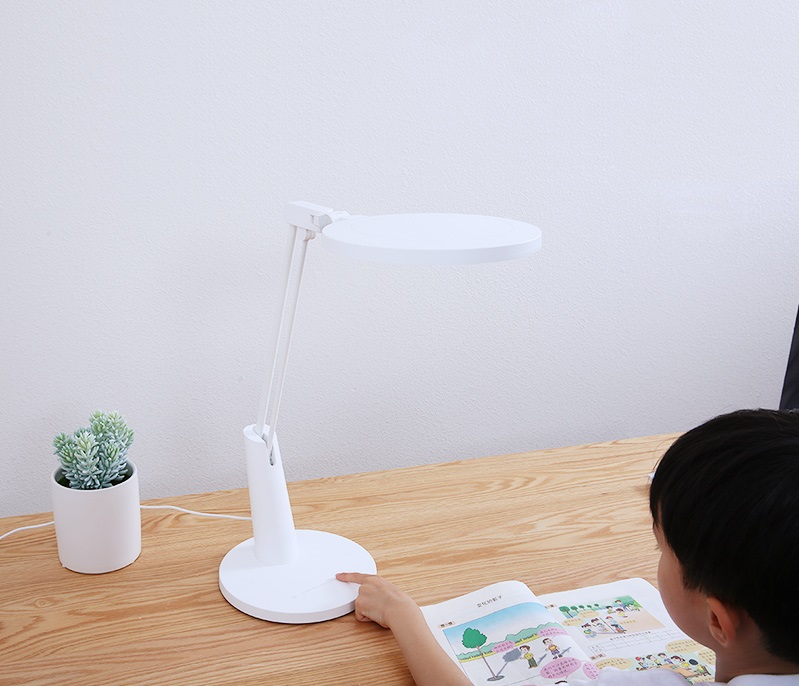</div>
            <div class="col-xs-12 col-sm-6 col-md-6 col-lg-6">
                <div class="text">
                    <h2>Теплый естественный свет, чтобы успокоить глаза</h2>
                    <p>Serene производит 3700K теплый свет, который достаточно мягкий для детей, но не слишком теплый,
                        чтобы вы уснули.</p>
                </div>
            </div>
        </section>

        <section class="row muse_content_4">
            <div class="col-xs-12 col-sm-6 col-sm-push-6 col-md-6 col-md-push-6 col-lg-6 col-lg-push-6" style="padding: 0; font-size: 0">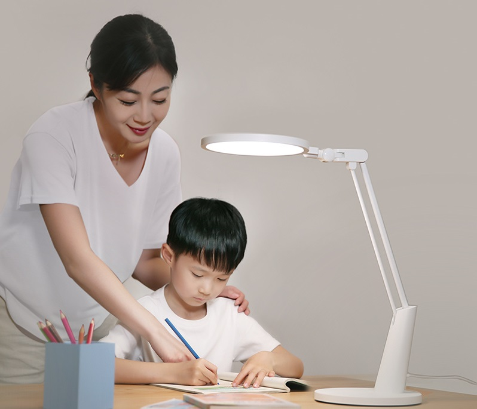</div>
            <div class="col-xs-12 col-sm-6 col-sm-pull-6 col-md-6 col-md-pull-6 col-lg-6 col-lg-pull-6">

                <div class="text">
                    <h2>Низкий синий свет более безопасен для детского зрения</h2>
                    <p>Что такое синий свет? Голубой свет с длиной волны от 420 нм до 450 нм может потенциально
                        повредить роговицу детей, линзу и даже сетчатку. Serene получила международное признание за
                        свой рейтинг фотобиологической безопасности RB0 и служит для защиты зрения детей от вредного
                        голубого света.</p>
                    
                </div>
            </div>
        </section>

        <section class="row muse_content_5">
            <div class="col-xs-12 col-sm-12 col-md-10 col-md-offset-1 col-lg-10 col-lg-offset-1 align-center">
                <div class="text">
                    <h2>Отсутствуют мерцания, мягкая для глаз</h2>
                    <p>Постоянное мерцание может быть опасно для глаз и привести к головной
                        боли и больным глазам. Преобразуя переменные токи в прямые токи, Serene стабилизирует световую
                        волну для обеспечения равномерного освещения.</p>
                </div>
            </div>
        </section>

        <section class="row ledtable_content_5">
            <div class="col-xs-12 col-sm-12 col-md-10 col-md-offset-1 col-lg-10 col-lg-offset-1 align-center">
                <div class="text">
                    <h2>Сравнительный график мерцания</h2>
                </div>
                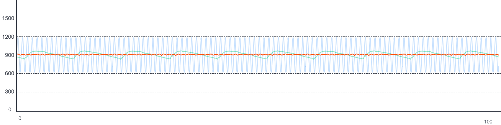
                <ul>
                    <li class="orange">
                        <span class="circle"></span>
                        <span>Yeelight Serene</span>
                    </li>
                    <li class="blue">
                        <span class="circle"></span>
                        <span>Стандартные значения</span>
                    </li>
                    <li class="green">
                        <span class="circle"></span>
                        <span>Обычная светодиодная лампа</span>
                    </li>
                </ul>
            </div>
        </section>

        <section class="row muse_content_6">
            <div class="col-xs-12 col-sm-12 col-md-6 col-lg-6">
                <div class="text">
                    <h2>Совершенное распространение света</h2>
                    <p>Используя 88 единиц светодиодов международного уровня, Serene излучает свет, который
                        распространяется равномерно. Serene гарантирует яркость, избегая бликов и других осложнений.
                        Будь то книга перед ребенком или альбом на столе, они могут быть равномерно освещены.</p>
                </div>
            </div>
            <div class="col-xs-12 col-sm-12 col-md-6 col-lg-6">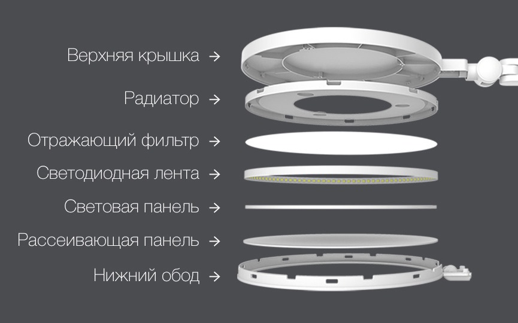</div>
        </section>

        <section class="row muse_content_7">
            <div class="col-xs-12 col-sm-6 col-md-6 col-lg-6" style="padding: 0">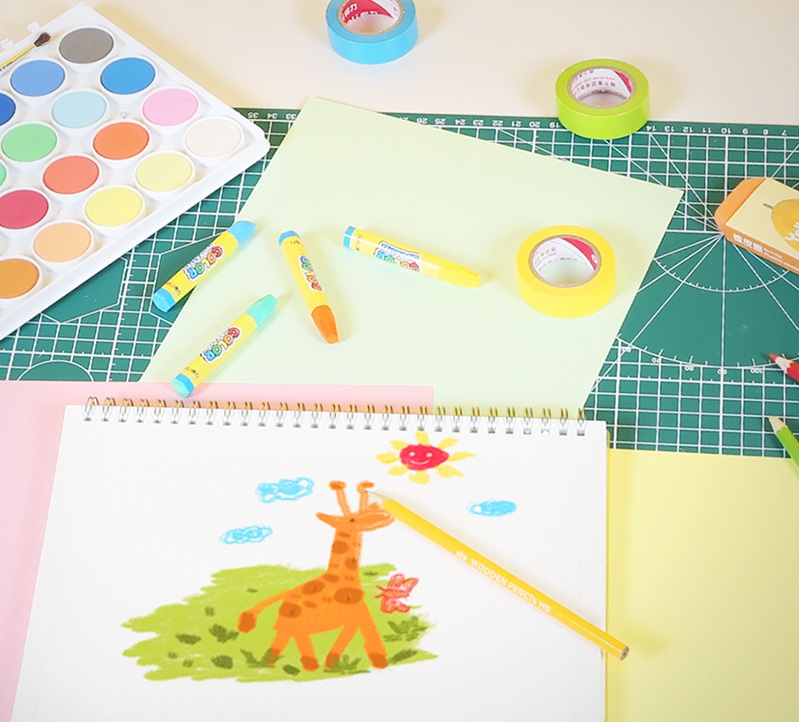</div>
            <div class="col-xs-12 col-sm-6 col-md-6 col-lg-6">
                <div class="text">
                    <h2>Естественный свет без искажения цвета</h2>
                    <p>С индексом цветопередачи R>95*, Serene может точно изображать цвета, как если бы это было при
                        естественном дневном свете. Под лампой вы можете точно различать похожие цвета, такие как
                        темно-синий и черный, что позволяет детям видеть красочный мир реалистично.</p>
                    <p>* Солнечный свет рассматривается как самый идеальный источник естественного света, индекс
                        цветопередачи которого равен 100.
                        Чем ближе значение индекса цветопередачи становится к 100, тем лучше цветопередача.
                    </p>
                </div>
            </div>
        </section>

        <section class="row muse_content_8 row-flex">
            <div class="col-xs-12 col-sm-6 col-md-6 col-lg-6 sensor align-center">
                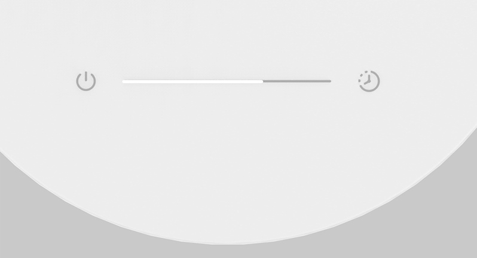
                <div class="text">
                    <h2>Управление сенсорной панелью</h2>
                    <p>С сенсорной панелью на Serene вы можете наслаждаться плавным и простым регулированием яркости с
                        помощью пальцев, одним нажатием кнопки включить лампу или войти в режим таймера.</p>
                </div>
            </div>
            <div class="col-xs-12 col-sm-6 col-md-6 col-lg-6 app align-center">
                <div class="text">
                    <h2>Интеллектуальное управление </h2>
                    <p>Используя приложение Mi Home App или приложение Yeelight, вы можете управлять лампой через свой
                        телефон. Выберите функции настройки таймера и сделайте свет напоминанием, чтобы ваши дети
                        берегли свои глаза.</p>
                </div>
                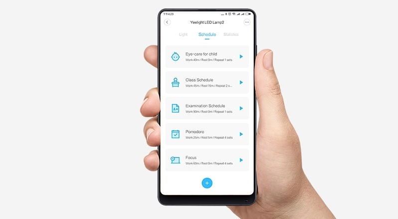
            </div>
        </section>

        <section class="row muse_content_9">
            <div class="col-xs-12 col-sm-6 col-md-6 col-lg-6">
                <div class="text">
                    <h2>Регулируемая и удобная</h2>
                    <p>Запатентованная 7-точечная вращаемая конструкция обеспечивает максимальный комфорт,
                        приспосабливаясь к потребностям вашего ребенка. Линзу можно всегда регулировать, гарантируя
                        прямое освещение и минимальный блеск.</p>
                </div>
            </div>
            <div class="col-xs-12 col-sm-6 col-md-6 col-lg-6">
                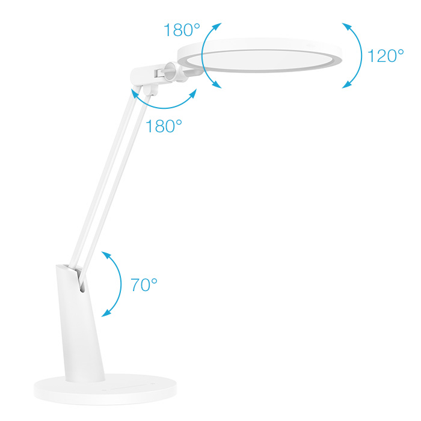
            </div>
        </section>

        <section class="row muse_content_10">
            <div class="col-xs-12 col-sm-6 col-md-6 col-lg-6">
                <div class="text">
                    <h2>Лампа, защищающая глаза</h2>
                    <p>Мягкий свет, похожий на естественный дневной свет, не только защищает глаза ребенка, но и всех
                        членов семьи.</p>
                </div>
            </div>
        </section>

        <section class="row muse_content_11 row-flex">
            <div class="col-xs-12 col-sm-4 col-md-4 col-lg-4 item_1">
                <div class="text">
                    <h2>Продольный дизайн</h2>
                    <p>Serene пользуется международным признанием за свой дизайн боковых линз, предлагая более
                        равномерно распределенный свет.</p>
                </div>
                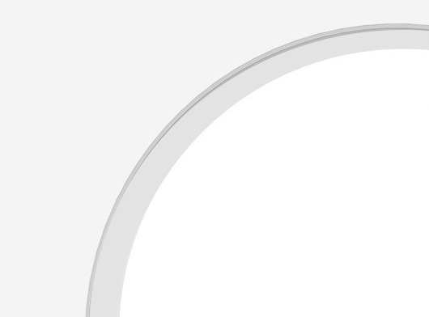
            </div>
            <div class="col-xs-12 col-sm-4 col-md-4 col-lg-4 item_2">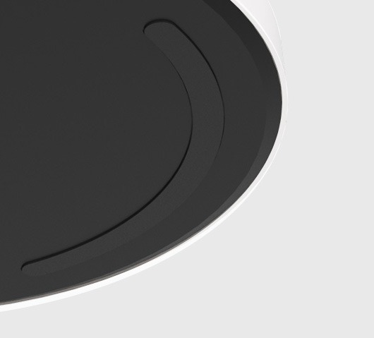
                <div class="text">
                    <h2>База</h2>
                    <p>Тяжелая база в сочетании с противоскользящей подушкой обеспечивает стабильность устройства,
                        уберегая лампу от опрокидывания.</p>
                </div>
            </div>
            <div class="col-xs-12 col-sm-4 col-md-4 col-lg-4 item_3">
                <div class="text">
                    <h2>Запатентованная ось вращения</h2>
                    <p>Запатентованная 7-точечная вращательная конструкция обеспечивает максимальный комфорт,
                        приспосабливаясь к потребностям вашего ребенка.</p>
                </div>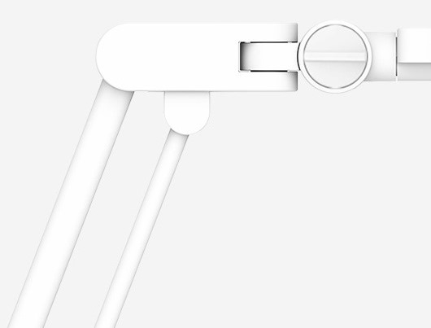
            </div>
        </section>

        <section class="row muse_content_12">
            <div class="col-sm-12 col-md-12 col-lg-12">
                <table class="table">
                    <thead>
                        <tr>
                            <th colspan="2">Характеристики</th>
                        </tr>
                    </thead>
                    <tbody>
                        <tr>
                            <td>Модель</td>
                            <td>YLTD03YL, YLTD04YL</td>
                        </tr>
                        <tr>
                            <td>Цвет</td>
                            <td>Белый, Металик</td>
                        </tr>
                        <tr>
                            <td>Размеры</td>
                            <td>330x200x500mm</td>
                        </tr>
                        <tr>
                            <td>Вес</td>
                            <td>2250g</td>
                        </tr>
                        <tr>
                            <td>Световой поток</td>
                            <td>850lm</td>
                        </tr>
                        <tr>
                            <td>Сеть</td>
                            <td>Wi-Fi IEEE 802.11 b/g/n 2.4GHz</td>
                        </tr>
                        <tr>
                            <td>Цветовая температура</td>
                            <td>3700K</td>
                        </tr>
                        <tr>
                            <td>CRI</td>
                            <td>>95</td>
                        </tr>
                        <tr>
                            <td>Диапазон яркости</td>
                            <td>1%-100%</td>
                        </tr>
                        <tr>
                            <td>Мощность</td>
                            <td>14W</td>
                        </tr>
                        <tr>
                            <td>Поддерживаемые платформы</td>
                            <td>Android 4.4 и выше / IOS 8.0 и выше</td>
                        </tr>
                    </tbody>
                </table>
            </div>
        </section>
    </div>
</div>